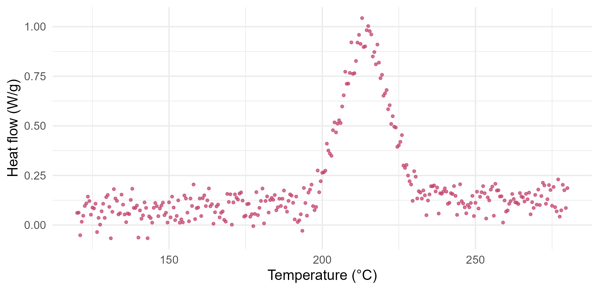
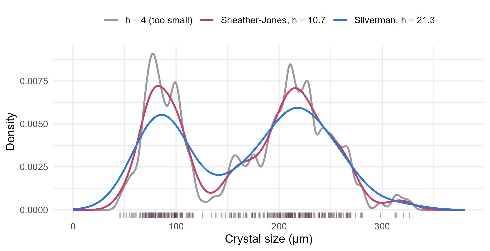
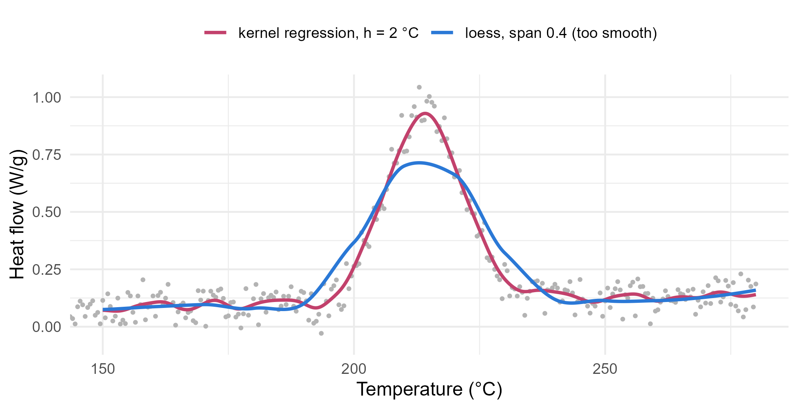

Module 4 · Lesson 13 of 14 Week 73 of 160 About 5–7 hours
Smoothing methods
Seeing the curve through the noise
Estimate a density without assuming its shape, with kernel density estimation of crystal sizes, and see how the bandwidth decides what you see. Then smooth a noisy DSC scan to find the temperature of its exothermic peak: with a kernel regression you write yourself, with loess, and with a smoothing spline. Choose the bandwidth by cross-validation, and bootstrap the peak temperature.
Most of this course’s models have a shape decided in advance: a straight line, a normal distribution, a mixture of two normals. Smoothing lets the data decide the shape. You give up a formula, and in exchange you see the data’s real structure: two humps where a normal distribution would show one, or a peak where a polynomial would put a wiggle.
This lesson has two problems. The first is Lesson 10’s crystal sizes, without assuming that they’re a mixture of normals. The second is new. The safety lab heated a sample of the reaction mixture in a differential scanning calorimeter (DSC), which measures the heat the sample releases as its temperature rises at a steady rate. The scan shows an exotherm, a peak of released heat, and its temperature matters for safety: it says where a runaway could start. But the scan is noisy:
ggplot(dsc, aes(x = temp_C, y = heat_flow_Wg)) +
geom_point(size = 0.8, color = "#C2416C", alpha = 0.7) +
labs(x = "Temperature (°C)", y = "Heat flow (W/g)") +
theme_minimal(base_size = 12)
The highest single reading is at 213.0 °C, but with noise this big, the highest point says little about where the true peak is. A smooth curve through the points says much more.
Smoothing is like squinting at a picture: the tiny details blur away, and the big shapes pop out. The trick is squinting just the right amount!
In this lesson you’ll:
- estimate a density with a kernel, and see what the bandwidth does
- compare rules for choosing the bandwidth
- write a kernel regression yourself, and find the DSC peak
- smooth with loess and smoothing splines
- choose a bandwidth by cross-validation, and bootstrap the peak temperature
Kernel density estimation
A histogram depends on where its bins start and how wide they are. A kernel density estimate (KDE) avoids the bins: it places a small bump, the kernel, on every data point, and adds them up. With a normal kernel of standard deviation h, the bandwidth,
\hat{f}(x) = \frac{1}{n h} \sum_{i=1}^n \phi\!\left(\frac{x - x_i}{h}\right),
where \phi is the standard normal density. Each bump has area 1/n, so the total area is 1. The bandwidth decides everything: a small h gives a spiky estimate that follows every quirk of the sample, and a large h blurs real features away.
Your turn. Write the kernel density estimate as a function, and evaluate it at 85, 150 and 215 µm with a bandwidth of 15 µm.
The formula divides by nh. mean() already divides by n, so divide by h.
kde <- function(x0, h) mean(dnorm((x0 - x) / h)) / h
c(at_85 = kde(85, 15), at_150 = kde(150, 15), at_215 = kde(215, 15))0.0065 at both 85 and 215 µm, the two humps, and 0.0019 at 150 µm, in the valley between them. R’s density(x, bw = 15) gives the same values to four digits (it uses a fast approximation on a grid). With 250 crystals, the estimate at 150 µm says that about 0.19% of crystals per micrometer are near 150 µm.
Choosing the bandwidth
density() chooses a bandwidth automatically, with Silverman’s rule of thumb, bw.nrd0(), which would be the best choice if the data were normal. For data with two humps, it oversmooths. The Sheather-Jones method, bw.SJ(), estimates the curvature of the density from the data instead, and usually does better.
Your turn. Compare the two bandwidths, and count the peaks of each density estimate. The setup code has n_modes(h), which counts the peaks for a bandwidth h.
The Sheather-Jones bandwidth is bw.SJ(x).
bws <- c(silverman = bw.nrd0(x), sheather_jones = bw.SJ(x))
rbind(bandwidth = bws, peaks = sapply(bws, n_modes))Silverman’s rule picks 21.3 µm, and Sheather-Jones 10.7 µm, half as wide. Both find the two populations, but Silverman’s estimate flattens the fines’ peak and fills in the valley. Sheather-Jones finds a third, tiny peak at 316 µm: the two largest crystals, far out in the tail. Is that a real third population, or noise? Two crystals can’t tell you. The number of peaks depends on the bandwidth, so be careful about reading too much into small ones.
dens <- do.call(rbind, lapply(list(c("h = 4 (too small)", 4), c("Sheather-Jones, h = 10.7", bw.SJ(x)), c("Silverman, h = 21.3", bw.nrd0(x))), function(b) {
d <- density(x, bw = as.numeric(b[2]), n = 1024, from = 0, to = 380)
data.frame(size = d$x, density = d$y, rule = b[1])
}))
dens$rule <- factor(dens$rule, levels = c("h = 4 (too small)", "Sheather-Jones, h = 10.7", "Silverman, h = 21.3"))
ggplot(dens, aes(x = size, y = density, color = rule)) +
geom_line(linewidth = 0.9) +
geom_rug(data = crystals, aes(x = size_um), inherit.aes = FALSE, alpha = 0.4, color = "#3A1F35") +
scale_color_manual(values = c("grey60", "#C2416C", "#2a78d6"), name = NULL) +
labs(x = "Crystal size (µm)", y = "Density") +
theme_minimal(base_size = 12) +
theme(legend.position = "top")
Kernel regression
The same idea smooths a curve through points. To estimate the heat flow at a temperature x_0, average the readings near x_0, giving more weight to the closer ones. With normal kernel weights w_i = \phi\big((x_0 - x_i)/h\big), that’s the Nadaraya-Watson estimator:
\hat{m}(x_0) = \frac{\sum_i w_i\, y_i}{\sum_i w_i}.
It’s a weighted mean that slides along the temperature axis. The bandwidth h is now in °C, and says how far from x_0 the readings still count.
Your turn. Write the estimator, compute the smooth curve on the setup code’s fine grid of temperatures with h = 2 °C, and find the peak.
Weight the heat-flow readings, heat.
nw <- function(x0, h) {
w <- dnorm((x0 - temp) / h)
sum(w * heat) / sum(w)
}
smooth <- sapply(grid, nw, h = 2)
c(peak_temp = grid[which.max(smooth)], peak_height = max(smooth))The smoothed peak is at 214.2 °C, with a height of 0.929 W/g. The noisy maximum was at 213.0 °C. (The scan was simulated with its true peak at 214.0 °C, so the smoother got within 0.2 degrees.) Try h = 5: the peak stays near 214 °C, but its height drops to 0.81, because a wide kernel averages the peak with its lower shoulders. Oversmoothing flattens peaks.
Loess
Kernel regression fits a weighted constant near each point. Loess (local regression) fits a weighted line or quadratic instead, which follows slopes and peaks better, especially near the ends of the data. Its bandwidth is the span: the fraction of the data used for each local fit. It’s what geom_smooth() draws by default for fewer than 1,000 points.
Your turn. Fit a loess curve with a span of 0.1 (each local fit uses the nearest 10% of the readings), and find the peak.
span = 0.1.
fit <- loess(heat_flow_Wg ~ temp_C, data = dsc, span = 0.1)
curve <- predict(fit, data.frame(temp_C = grid))
c(peak_temp = grid[which.max(curve)], peak_height = max(curve))A peak at 214.4 °C, 0.954 W/g high: higher than the kernel regression’s, because the local quadratics follow the peak’s curvature instead of averaging across it. The default span, 0.75, would be a disaster here: each local fit would use three quarters of the scan, and the peak would flatten to 0.49 W/g, at 218 °C.
Smoothing splines
A smoothing spline takes a different route. It looks for the function f that balances fitting the data against being smooth:
\sum_i \big(y_i - f(x_i)\big)^2 + \lambda \int f''(x)^2\, dx,
where f'' is the second derivative, which measures wiggliness. With \lambda = 0, the curve passes through every point. With \lambda \to \infty, it becomes a straight line. The answer is always a cubic spline (cubic polynomials joined smoothly at the data points), and smooth.spline() chooses \lambda by generalized cross-validation (GCV), a fast approximation to leave-one-out cross-validation. Its smoothness is reported as the equivalent degrees of freedom: 2 for a straight line, more for wigglier curves.
Your turn. Fit a smoothing spline with the GCV choice, and find its degrees of freedom and its peak.
The responses are the heat-flow readings, heat.
fit <- smooth.spline(temp, heat)
curve <- predict(fit, grid)$y
c(df = fit$df, peak_temp = grid[which.max(curve)], peak_height = max(curve))GCV chose 27.4 equivalent degrees of freedom, and the peak is at 214.1 °C, 0.939 W/g high. Three different smoothers, three peak temperatures between 214.1 and 214.4 °C: the data say “about 214 °C” clearly, whatever the method. The raw maximum, 213.0 °C, was a degree off.
Choosing the bandwidth by cross-validation
The bandwidth trades bias against variance. A wide kernel averages many readings, so the curve has little noise (low variance), but it flattens real features (high bias). A narrow kernel follows the features, but also the noise. Lesson 7’s cross-validation finds the balance: predict each reading from all the others, and choose the bandwidth that predicts best.
For kernel regression, leave-one-out is quick. Put all the kernel weights in a matrix K, with K_{ij} = \phi\big((x_i - x_j)/h\big). Setting its diagonal to 0 removes each reading from its own prediction, and then the leave-one-out predictions are the row-weighted averages, all at once.
Your turn. Compute the leave-one-out error for bandwidths from 0.5 to 10 °C.
Set the diagonal to 0.
cv_error <- function(h) {
K <- dnorm(outer(temp, temp, "-") / h) # all the kernel weights
diag(K) <- 0 # leave each reading out of its own prediction
pred <- drop(K %*% heat) / rowSums(K)
mean((heat - pred)^2)
}
hs <- c(0.5, 1, 1.5, 2, 2.5, 3, 4, 5, 7, 10)
round(sapply(hs, cv_error), 5)The error is smallest at h = 2 °C (0.00294), rises slowly for smaller bandwidths, where the noise gets through, and quickly for larger ones, where the peak gets flattened. optimize(cv_error, c(0.5, 10)) puts the best bandwidth at 1.9 °C. The minimum error, 0.0029, is a typical prediction error of \sqrt{0.0029} = 0.054 W/g, about the size of the instrument’s noise.
Here’s the scan with the cross-validated kernel regression, and an oversmoothed loess for contrast:
smooth2 <- sapply(grid, nw, h = 2)
lo4 <- predict(loess(heat_flow_Wg ~ temp_C, data = dsc, span = 0.4), data.frame(temp_C = grid))
curves <- rbind(data.frame(temp = grid, heat = smooth2, method = "kernel regression, h = 2 °C"),
data.frame(temp = grid, heat = lo4, method = "loess, span 0.4 (too smooth)"))
ggplot(dsc, aes(x = temp_C, y = heat_flow_Wg)) +
geom_point(size = 0.7, color = "grey70") +
geom_line(data = curves, aes(x = temp, y = heat, color = method), linewidth = 1) +
scale_color_manual(values = c("#C2416C", "#2a78d6"), name = NULL) +
coord_cartesian(xlim = c(150, 280)) +
labs(x = "Temperature (°C)", y = "Heat flow (W/g)") +
theme_minimal(base_size = 12) +
theme(legend.position = "top")
NoteGo deeper: the curse of dimensionality
Smoothing works beautifully in one dimension, and reasonably in two or three. In ten, it fails. To keep a “neighborhood” containing 10% of uniformly spread data in d dimensions, its side must cover a fraction 0.1^{1/d} of each variable’s range: 10% in one dimension, 32% in two, and 79% in ten. The neighborhoods stop being local, and the estimates stop being smooth versions of the data. That’s the curse of dimensionality, and it’s why many-variable problems need models with structure, such as additive models, which smooth one variable at a time, or the trees and other methods of Modules 7 and 8.
Challenge round
Challenge 1 · How precise is the peak temperature? Bootstrap it, with Lesson 6’s residual resampling: compute the smooth curve at the readings’ temperatures, add resampled residuals to make 1,000 new scans, smooth each one, and find its peak. To make it fast, the code computes the kernel weights for every grid point once, as a matrix W with rows that sum to 1, so that smoothing a scan is a single matrix product.
Resample the residuals, res.
h <- 2
W <- dnorm(outer(grid, temp, "-") / h); W <- W / rowSums(W) # smoothing weights on the grid
K <- dnorm(outer(temp, temp, "-") / h); K <- K / rowSums(K) # and at the readings
fitted_heat <- drop(K %*% heat)
res <- heat - fitted_heat
set.seed(4131)
peaks <- replicate(1000, {
new_scan <- fitted_heat + sample(res, replace = TRUE)
grid[which.max(W %*% new_scan)]
})
c(peak = grid[which.max(W %*% heat)], se = sd(peaks), quantile(peaks, c(0.025, 0.975)))The peak is at 214.2 °C, with a bootstrap standard error of 0.33 °C and a 95% interval from 213.4 to 214.7 °C. For the safety report: the exotherm peaks at 214.2 \pm 0.7 °C. (This interval ignores the smoother’s bias, which is small here because the bandwidth is narrow compared with the peak’s width.)
Challenge 2 · How smooth is too smooth? The height of the peak matters too: it’s related to how violently the reaction releases heat. Fit smoothing splines with 8, 15, 27.4 (GCV’s choice) and 80 degrees of freedom, and compare their peak heights. The true peak height of this simulated scan is 0.956 W/g.
Inside the function, the degrees of freedom are d.
sapply(c(8, 15, 27.4, 80), function(d) {
fit <- smooth.spline(temp, heat, df = d)
max(predict(fit, grid)$y)
})0.65, 0.86, 0.94 and 0.97 W/g. With 8 degrees of freedom, the spline is too stiff to bend sharply, and it shaves a third off the peak. GCV’s 27.4 gets within 2% of the true 0.956. With 80, the curve is noisy, and its maximum is pushed up by the noise, a little above the truth. Oversmoothing biases peaks down, and undersmoothing makes them noisy and, if anything, too high.
Quick quiz
1. What does a kernel density estimate put on each data point?
The estimate is the sum of all the bumps.
2. What happens with a very small bandwidth?
Small bandwidths mean low bias and high variance. Large ones, the reverse.
3. Why does Silverman’s rule oversmooth the crystal sizes?
Sheather-Jones adapts to the data’s curvature and picks a narrower bandwidth here.
4. What’s the difference between kernel regression and loess?
Local lines or quadratics follow slopes and peaks better.
5. In a smoothing spline, what does a larger \lambda do?
\lambda trades the fit to the data against the curve’s roughness.
6. How does leave-one-out cross-validation choose a bandwidth?
The smallest residuals always come from the smallest bandwidth, which just follows the noise.
Wrap-up
You can now let the data choose the shape of a curve. Here’s what you’ve learned:
- Kernel density estimates add a bump for every data point. The bandwidth decides what you see: Silverman’s 21.3 µm flattens the crystals’ fines, and Sheather-Jones’s 10.7 µm shows both populations clearly.
- Kernel regression is a sliding weighted mean. Loess fits local lines or quadratics, and smoothing splines balance the fit against the curvature.
- The DSC exotherm peaks at about 214 °C by every method (214.1 to 214.4), where the noisiest point said 213.0.
- The bias-variance trade-off: too wide and peaks flatten (a spline with 8 degrees of freedom lost a third of the peak), too narrow and the noise gets through.
- Cross-validation chose a bandwidth of about 2 °C, and the bootstrap gave the peak temperature as 214.2 \pm 0.7 °C.
- Smoothing struggles in many dimensions, where neighborhoods stop being local.
TipPractice in RStudio (optional, about an hour)
Download crystal_sizes.csv and dsc_scan.csv into your project’s data-raw/ folder.
- Other kernels.
density()has akernelargument: try"epanechnikov","rectangular"and"triangular"with the Sheather-Jones bandwidth. Does the kernel’s shape matter as much as its width? - Onset temperature. Safety reports often use the exotherm’s onset: the temperature where the heat flow first rises clearly above the baseline. Fit a straight line to the baseline between 120 and 170 °C, and find where the smoothed curve first exceeds it by 0.05 W/g. How sensitive is the onset to the bandwidth?
- The derivative. The steepest rise of the exotherm is where the derivative of the smooth curve is largest.
predict(fit, grid, deriv = 1)gives the derivative of a smoothing spline. Find the temperature of the steepest rise. - geom_smooth. Plot the scan with
geom_smooth(method = "loess", span = 0.1)and with the default span. Then trygeom_smooth(method = "gam", formula = y ~ s(x, k = 40)), which uses a penalized spline from themgcvpackage (it comes with R). Which one would you show in a safety report?
NoteKey words from this lesson
- Smoothing
- Estimating a curve or a density from data without assuming a fixed functional form.
- Kernel density estimate
- A density estimate made by placing a kernel (a small bump) on every data point and adding them up.
- Bandwidth
- The width of the kernel, which controls how smooth the estimate is.
- Kernel regression
- A smooth curve made of weighted local averages: the Nadaraya-Watson estimator.
- Loess
- Local regression: a smooth curve made of weighted local lines or quadratics, with a span that controls its smoothness.
- Smoothing spline
- The curve that minimizes the residual sum of squares plus a penalty \lambda on its curvature.
- Bias-variance trade-off
- Smoother estimates have less noise but more distortion of real features, and rougher ones the reverse.
- Curse of dimensionality
- The difficulty of smoothing in many dimensions, where any neighborhood holding enough data is no longer local.
NoteWant to read more?
- Gareth James and others, An Introduction to Statistical Learning, chapter 7, “Moving beyond linearity”. Smoothing splines, local regression and generalized additive models, with R labs.
- Larry Wasserman, All of Nonparametric Statistics (Springer, 2006), chapters 5 and 6. Kernel regression, density estimation, bandwidth choice and the bias-variance trade-off, concisely. Not free.
- R’s help pages for
density(),bw.SJ(),loess()andsmooth.spline(). Their arguments and the methods behind them.